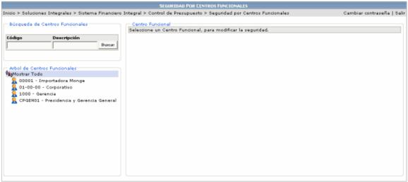
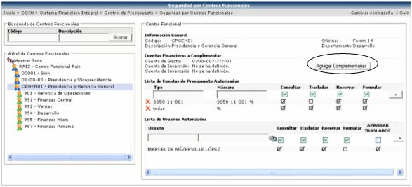

En esta opción se le asigna al centro funcional, las cuentas a las que puede realizarle movimientos y los usuarios que pueden realizar dichos movimientos. Estos movimientos pueden ser Consultar, Trasladar, Reservar o Formular Presupuesto. Además se le puede definir, el usuario o los usuarios que pueden aprobar los traslados.
Lo que se tiene que hacer es seleccionar el centro funcional al que se le quiere asociar la seguridad:

Una vez seleccionado el centro funcional se le agrega la seguridad. En la sección de Lista de Cuentas de Presupuesto Autorizadas se deben de agregar las cuentas, a las que se van a registrar movimientos. En el campo TIPO se puede poner el nombre de la cuenta o alguna información que la identifique. En el campo MÁSCARA, se pone la cuenta o si es un grupo muy grande de cuentas y no se quieren ingresar de una en una, se pueden usar comodines para esto. Este campo filtra cuentas que coincidan con la máscara especificada en él. Los comodines que se pueden utilizar son:
1) _ (guión bajo): significa cualquier carácter de tamaño 1
Ejemplo: 0006-_ _ _ -35
2) % (porcentaje): significa cualquier carácter de cualquier tamaño
Ejemplo: 0006-_ _ _ -35%
% (todas las cuentas)

Luego se deben de asignar los movimientos
a los que se tendrá permiso de realizar cada centro funcional por cuenta,
activando los checks de: Consultar o Trasladar o Reservar o Formular y
por último presionar el botón  .
.
Igualmente para agregar un usuario de debe
de llenar la información necesaria en
la sección Lista
de Usuarios Autorizados (usuario, consultar, trasladar, reservar,
formular) y presionar el botón  .
.
Pero si lo que se desea es eliminar una
línea se debe de presionar el icono  que se encuentra
la izquierda de la línea deseada. Y para modificar la información se hace
click encima del registro deseado.
que se encuentra
la izquierda de la línea deseada. Y para modificar la información se hace
click encima del registro deseado.
El botón  realiza lo siguiente:
procesa las “Cuentas
Financieras a Complementar” (estas cuentas son las 3 cuentas que
están a la izquierda del botón) del Centro Funcional y extrae la porción
Presupuestaria, sustituyendo los signos “?”
por “_” y colocando
un “%” al final,
y las agrega como “Cuentas de Presupuesto Autorizadas” para el Centro
Funcional.
realiza lo siguiente:
procesa las “Cuentas
Financieras a Complementar” (estas cuentas son las 3 cuentas que
están a la izquierda del botón) del Centro Funcional y extrae la porción
Presupuestaria, sustituyendo los signos “?”
por “_” y colocando
un “%” al final,
y las agrega como “Cuentas de Presupuesto Autorizadas” para el Centro
Funcional.